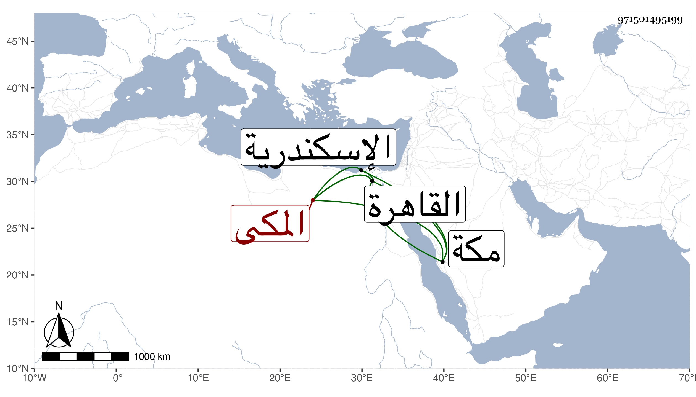

0902Sakhawi.DawLamic.ITO20230111-ara1.EIS1600.971501495199
Biography ID: 971501495199
994
سليمان بن داود بن عبد الله أبو الربيع المكى نزيل القاهرة . ولد بمكة ونشأ بها ودخل القاهرة قبل التسعين وسبعمائة طلبا للرزق فانقطع بها ورافق في هذه السنة بلديه ابن سلامة إلى الاسكندرية فسمع بها معه على البهاء عبد الله ابن أبي بكر الدمامينى الموطأ رواية يحيى بن يحيى أنا به يحيى بن محمد بن الحسين السفاقسى ومشيخة السفاقسى تخريج منصور بن سليم وعدة أجزاء من الثقفيات وحدث وممن أخذ عنه النجم بن فهد وقال كان عاميا مسرفا على نفسه ورفع للجمال الاستادار قصة يلتمس منه فيها نواله فكتب له عليها (ولسليمان الريح) فكتب هو تحت خطه (يوسف أعرض عن هذا)
